План тренировок для новичка
Без перегруза, безопасно и понятно: фулл-бади тренировки через день, ~30 минут, чтобы привыкнуть к залу и укрепить базу.
Формат: Full Body
Длительность: ~30 мин
Частота: через день
Пример расписания
Пн – Ср – Пт – Вс – …
Структура тренировки (30 минут)
5 минут
Разминка на кардио + суставная мобилизация.
20 минут
Силовая часть: ноги, спина, грудь, руки.
5 минут
Пресс + лёгкая растяжка.
Разминка (5 минут)
Кардио
Дорожка или вело — 3 минуты.
Суставы
Плечи, руки, таз, колени — 2 минуты.
Темп
Движения плавные, без рывков.
Основная тренировка (20 минут)
🦵 Ноги
Следи за стабильной спиной, колени не заваливай внутрь, опускайся контролируемо.

Стопы на платформе, спина прижата, движение плавное.
- Жим ногами — 3×12
- Приседания с гантелями — 3×10
🧠 Спина
Тяни лопатками вниз, корпус стабилен, не раскачивайся.
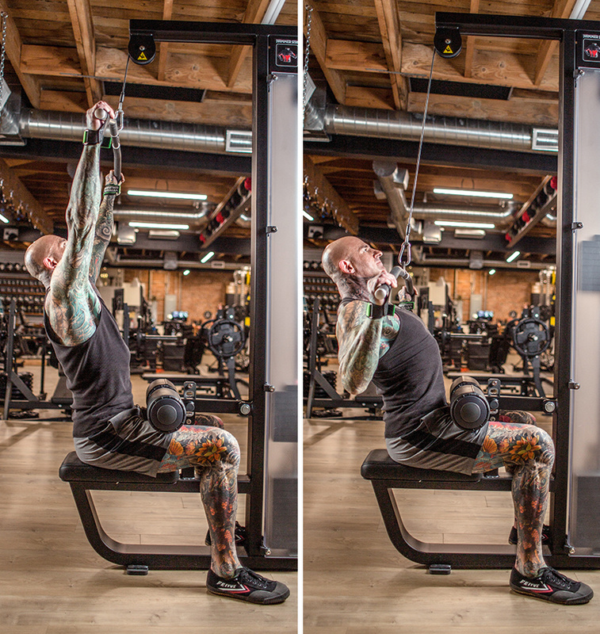
Тяни к верхней части груди, без раскачки.
- Тяга верхнего блока — 3×12
- Гиперэкстензия — 2×12
🧍♂️ Грудь
Лопатки сведены, локти под 45 градусов, гантели двигаются ровно.

Лопатки сведены, локти под контролем.
- Жим гантелей лёжа — 3×10
- Отжимания — 2×максимум
💪 Руки
Локти прижаты к корпусу, подъем без раскачки, полная амплитуда.

Локти рядом с корпусом, без рывков.
- Бицепс (гантели) — 2×12
- Трицепс (блок) — 2×12
Пресс + заминка (5 минут)
Скручивания
2×15, медленно, с контролем.
Планка
2×30–40 сек, корпус ровный.
Растяжка
Ноги, спина, руки — 2–3 минуты.

Корпус прямой, ягодицы не провисают, шея нейтрально.
Рекомендуемые веса (рост 180 см / вес 76 кг)
Вес должен позволять сделать 10–12 повторений, где последние 2 повтора тяжёлые, но техника не ломается.
| Упражнение | Стартовый вес |
|---|---|
| Жим ногами | 50–70 кг (старт 50 кг) |
| Присед с гантелями | 8–10 кг (если тяжело — 6 кг) |
| Тяга верхнего блока | 30–40 кг (старт 30 кг) |
| Жим гантелей лёжа | 8–10 кг (старт 8 кг) |
| Бицепс (гантели) | 6–8 кг |
| Трицепс (блок) | 20–25 кг |
| Планка | 30–40 сек |
Прогрессия
Каждые 2–3 тренировки: +2,5 кг на тренажёрах.
Гантели
+1 кг только если все подходы чистые.
Важное
Если боль в суставах — сразу снижай вес.
Коротко про питание
Белок
110–140 г в день.
Вода
2–2,5 литра в день.
Режим
3–4 приёма пищи в день.
Галерея упражнений
Все изображения из папки images собраны здесь, чтобы можно было быстро свериться с техникой.
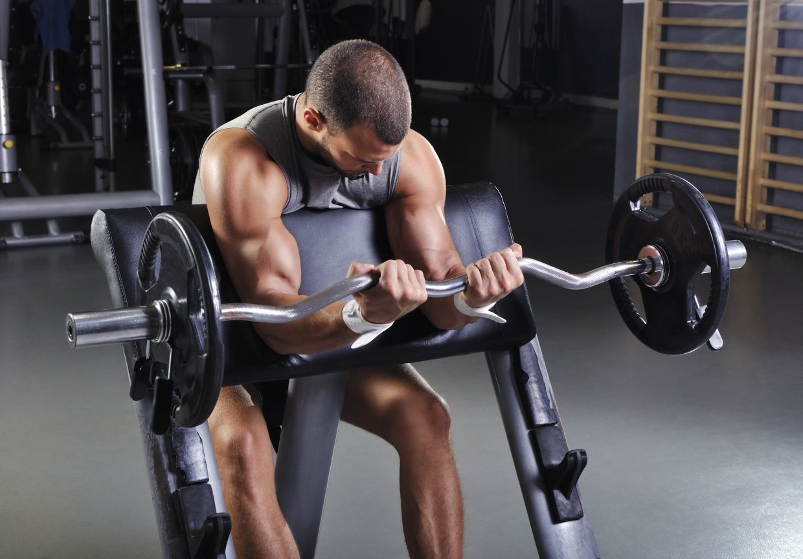
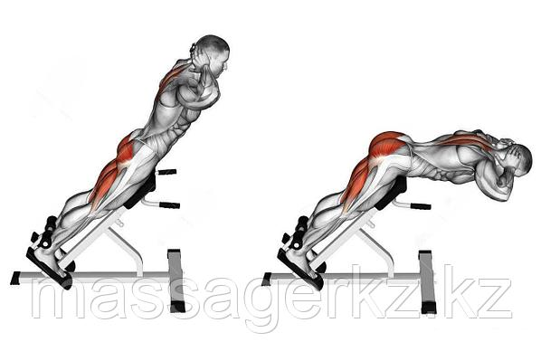
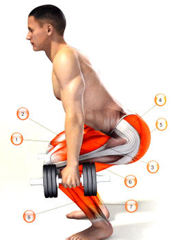
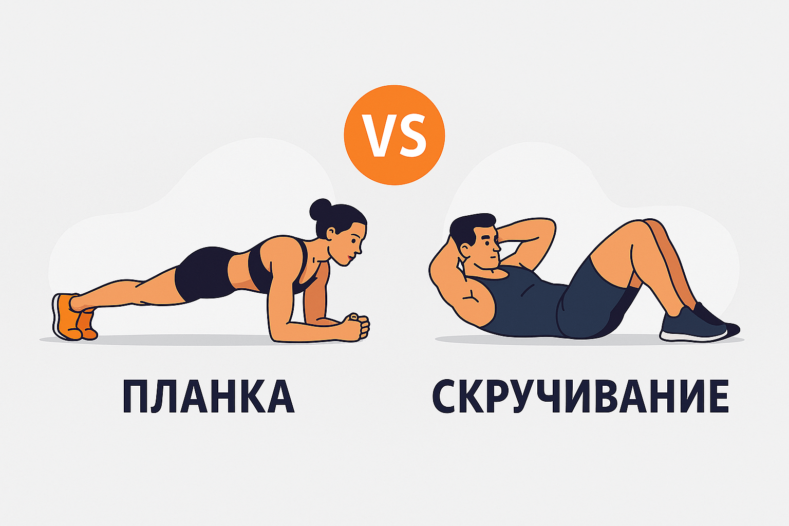
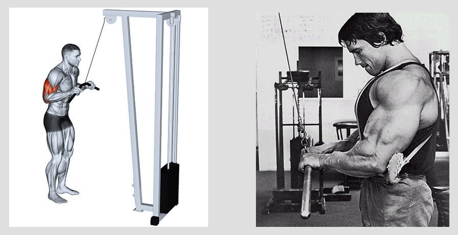

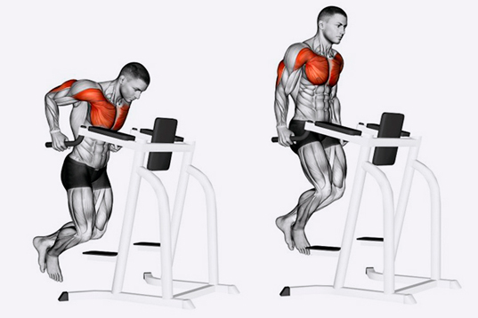
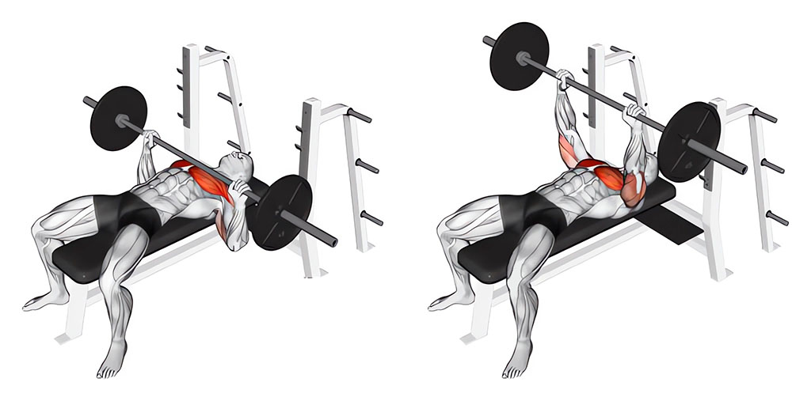
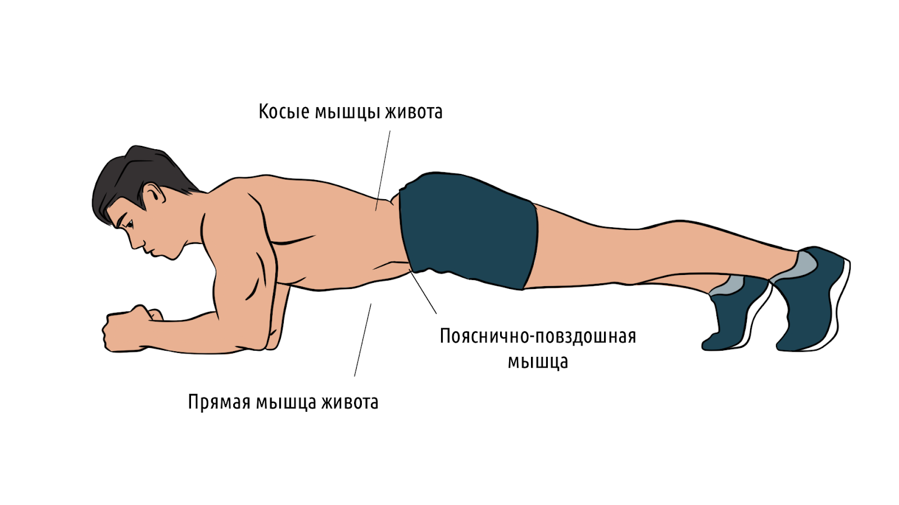
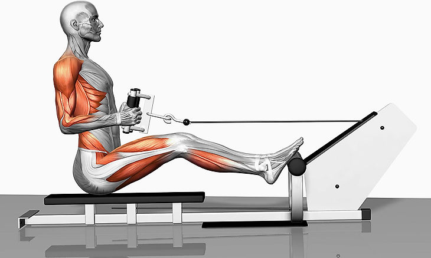
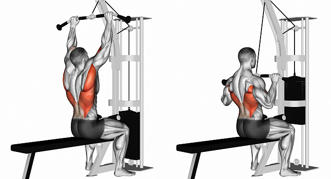
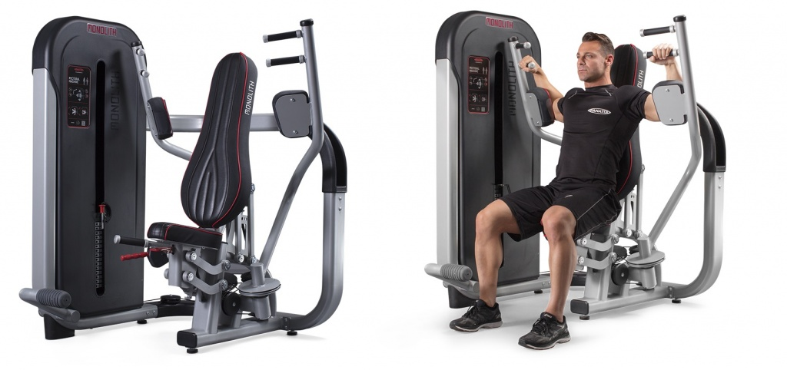
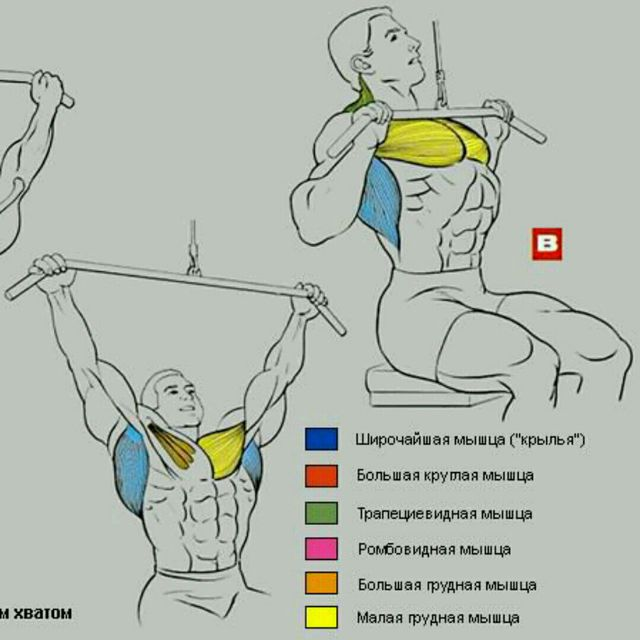

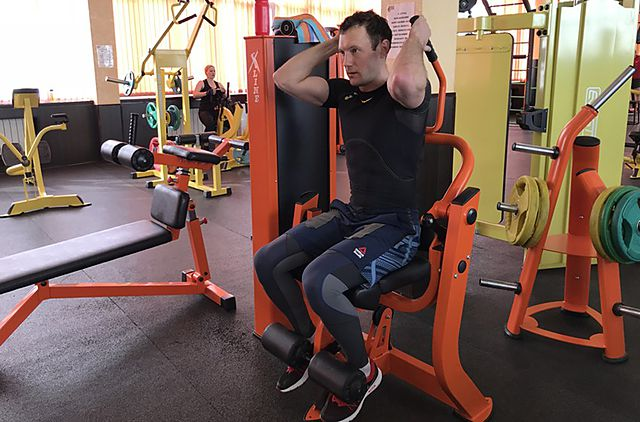
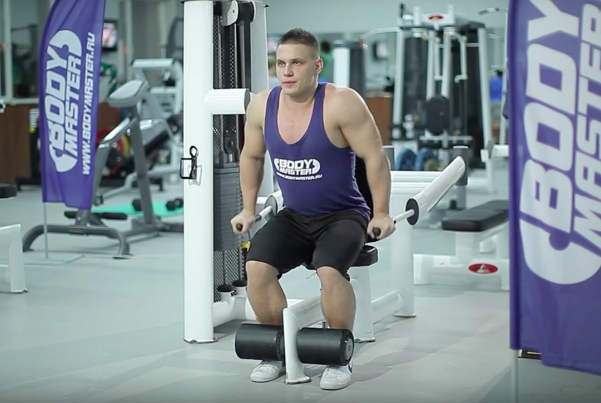
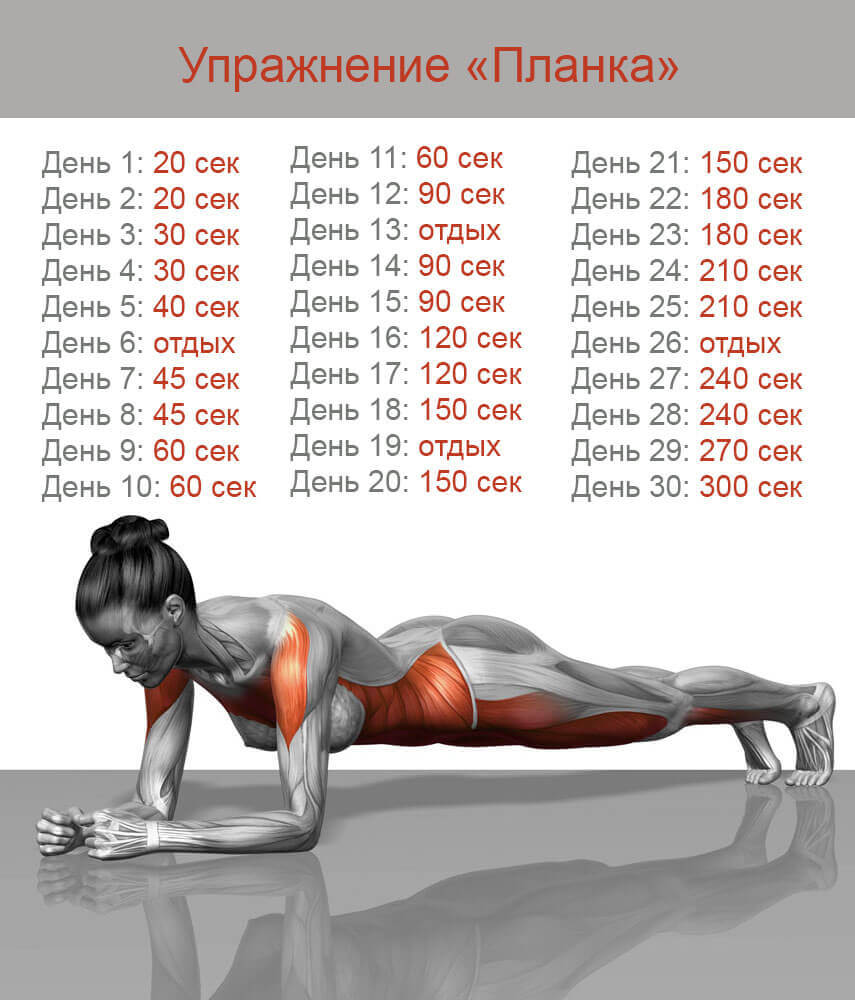
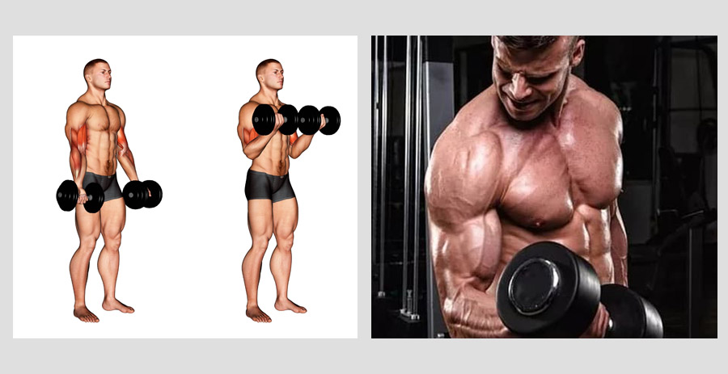

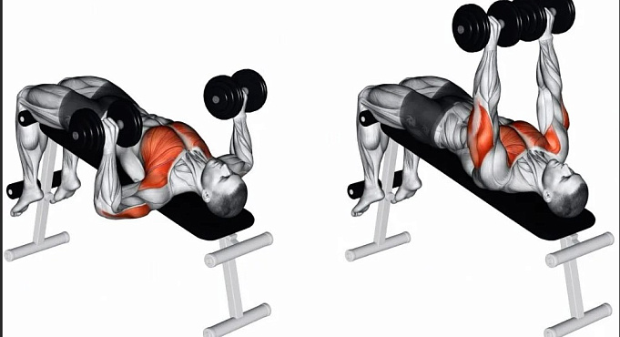
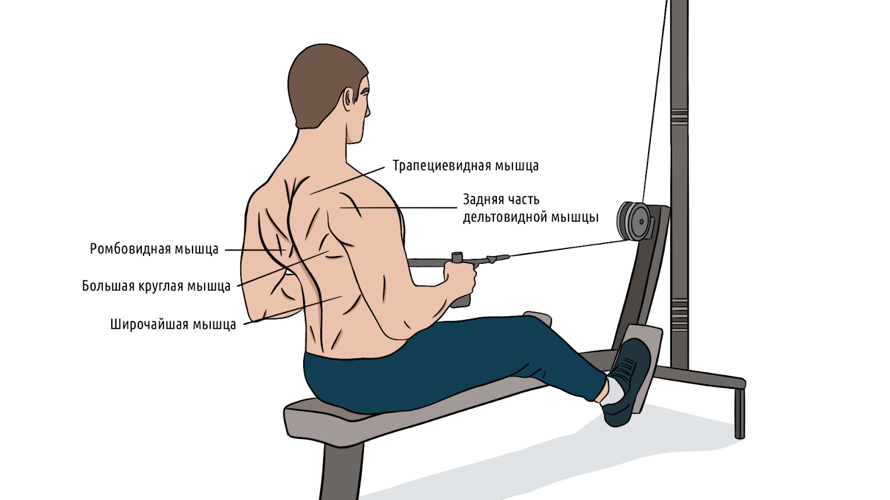